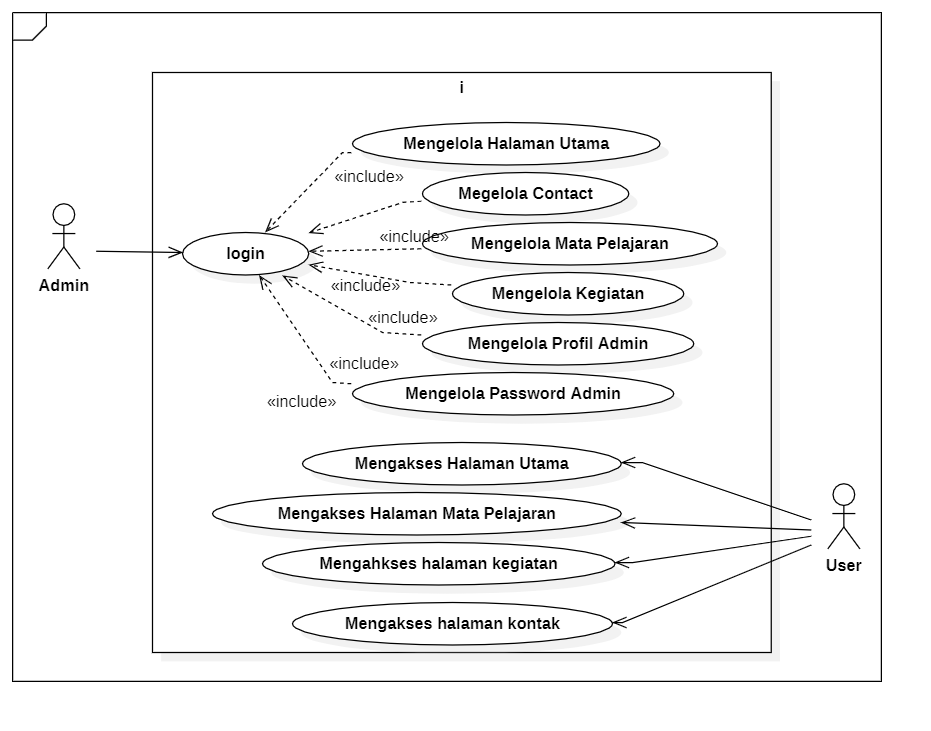
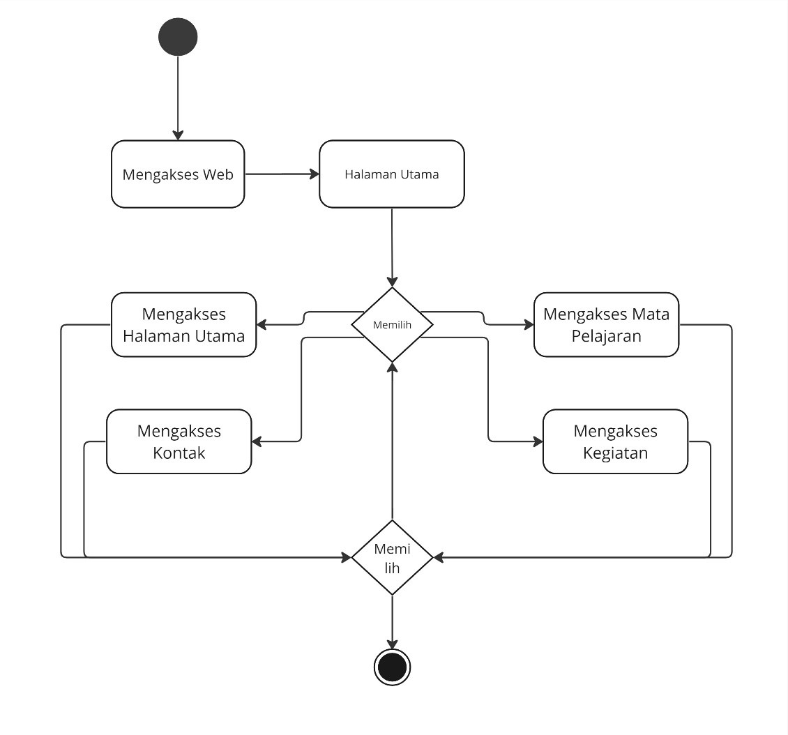
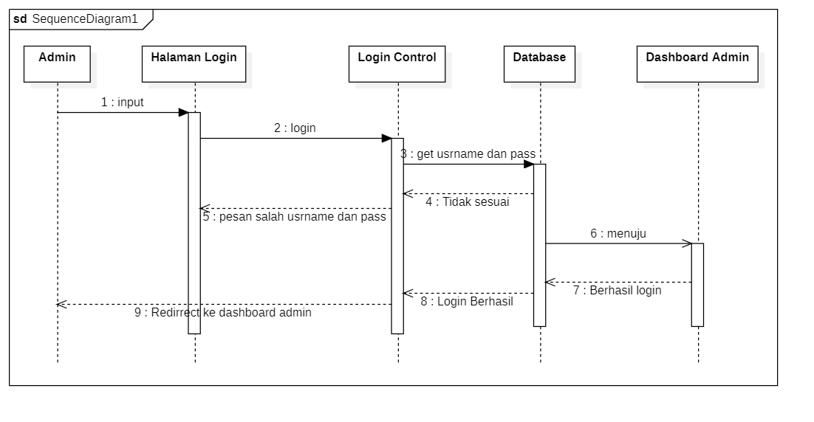
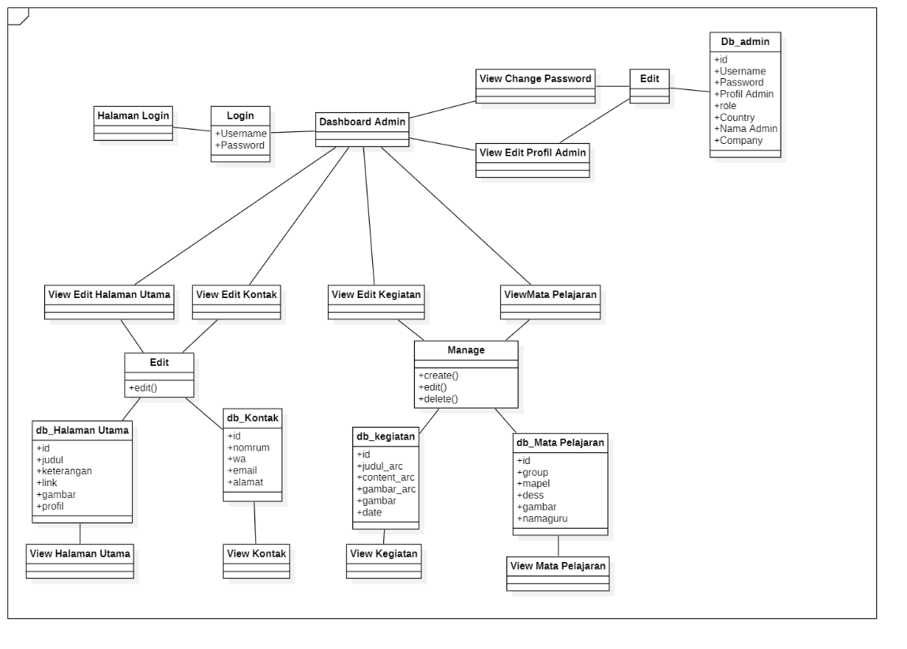

Project Details
Sistem Informasi SMP Negeri 13 Magelang
Web Information System of SMP Negeri 13 Magelang is a Web designed to distribute information about subjects and activities. This application helps to make it easier to find information and this website designed by waterfall methodology. Waterfall is a sequential development model. The Waterfall model is systematic and sequential in building a software. The process follows the flow from analysis, design, code, testing and maintenance.
Workflow
Interview
Requirement Compilation (UML)
Implementation
Testing

Waterfall Methodology
Requirements analysis is carried out to identify the needs of the system to be built. The purpose of this stage is to find out about the needs used for application development. For this reason, in the needs analysis there is an explanation of the general description of the system, functional and non-functional requirements, Use case models, class diagrams, and sequential diagrams, so that there is a clear picture of how the application will be built.
- Interview
- • System with admin login feature
- • The system can manage the Main Page
- • The system can manage Contact
- • The system can manage subjects
- • The system can manage Activities
- • The system can manage Admin Profiles
- • The system can manage Admin Password
- • The system can access links from the main page
- • The system can access the subject page
- • The system can access the activities page
- • The system can access the contact page
- • The system is run using a web browser such as Google Chrome or Microsoft Edge
- Requirement Compilation (UML)
- Implementation
- Testing
The interview was conducted with the agency, namely Mr. Nanang S.Pd SMP Negeri 13, which can be concluded that what is needed by the agency is a web info system designed to channel information about subjects and activities. This application helps to make it easier to find information.
After the interview I can conclude some functional and non-functional needs, namely:
Functional :
Non-Functional :
Unified Modeling Language (UML) is a standard modeling language used in software development to describe, visualize, and communicate system architecture, business processes, and the objects involved in programming.UML provides a consistent and standardized graphical notation, making it easier for software developers to communicate, collaborate, and understand the system to be created before the implementation process.
Use Case Diagram
Activity Diagram
Squence Diagram
Class Diagram Diagram
The implementation of the SMP Negeri 13 Magelang Information System website has successfully provided a centralized platform for delivering essential school information. With its user-friendly interface and well-structured content, the website offers up-to-date details about school activities, teacher profiles, subject information, and general school data. Users, including students, teachers, and parents, can easily access schedules, event updates, and academic resources. The system improves communication between the school and its stakeholders while supporting transparency and engagement. Overall, the website serves as a valuable digital tool that enhances the accessibility and management of school-related information at SMP Negeri 13 Magelang.
Admin Sites :

User Sites :

At this stage, the system that has been built becomes a ready-to-use software. But before that, testing will be carried out to test the feasibility of the system whether the system is in accordance with the conditions that have been determined from the start. In the implementation of system testing, procedural preparation and the formation of a test plan are carried out. This is done to make it easier when testing the system.
The test plan is a stage that will be carried out to test the system that has been created. System testing this time was carried out using the black box method. The black box method is a testing method that is carried out by observing the results of system execution through test data and checking the functionality of the system created.